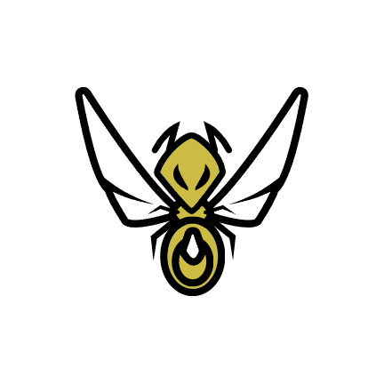

ANDROID
Vespa Player APK
Instale diretamente no seu dispositivo Android.
BAIXAR APK
VESPA PLAYER BAIXAR O APPPROJETO INDEPENDENTE
Vespa Player é um projeto independente, desenvolvido sem fins lucrativos para tornar a experiência de acesso mais simples, organizada e confortável.
O Vespa Player é um projeto independente e sem fins lucrativos. Ele foi criado para facilitar a organização e o acesso a opções disponibilizadas na internet, com uma interface leve, pensada para Android, Windows e Linux.
Uma interface objetiva para encontrar e abrir o que você procura.
Disponível para Android e em versões portáteis para Windows e Linux.
Um projeto desenvolvido de forma independente, sem finalidade comercial.
Os arquivos oficiais são disponibilizados diretamente por este site.
ANDROID
Instale diretamente no seu dispositivo Android.
BAIXAR APKWINDOWS
Baixe, extraia e execute sem instalação.
BAIXAR PORTABLELINUX
Baixe, extraia e execute a versão portátil para Linux.
BAIXAR PORTABLEOs arquivos são publicados junto com o site no GitHub Pages.
AVISO IMPORTANTE
Todos os links apresentados pelo aplicativo são — e sempre serão — de hospedagem de terceiros. O Vespa Player atua apenas como uma ferramenta que facilita o acesso a esses endereços.
Não armazenamos, transmitimos ou controlamos o conteúdo disponibilizado por plataformas externas. A responsabilidade pela disponibilidade, qualidade e pelos direitos de cada material é exclusivamente de seus respectivos provedores.
SEM FINS LUCRATIVOS
Use com responsabilidade e respeite os termos das plataformas de origem.